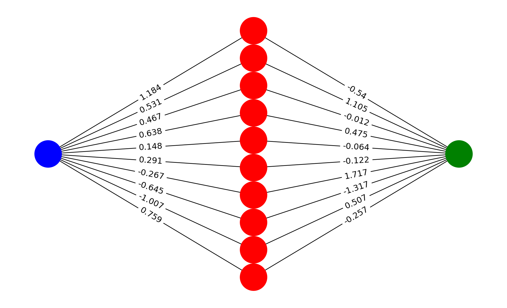

Las redes neuronales artificiales son un modelo computacional inspirado en el cerebro humano. Están compuestas por nodos llamados neuronas que están conectados entre sí. Cada conexión entre neuronas tiene un peso asociado que se ajusta durante el entrenamiento del modelo. Estos pesos son los parámetros que se ajustan para que el modelo pueda realizar predicciones, es decir, son la memoria del modelo y representan la importancia de cada conexión.
Las redes neuronales artificiales se dividen en capas, cada capa está compuesta por un conjunto de neuronas. La primera capa se llama capa de entrada, la última capa se llama capa de salida y las capas intermedias se llaman capas ocultas. La capa de entrada recibe los datos de entrada, la capa de salida produce la predicción y las capas ocultas procesan la información.
Red Neuronal
Comportamiento de una Neurona
Cada neurona recibe una serie de entradas, las multiplica por los pesos asociados a cada conexión y aplica una función de activación. La función de activación es una función no lineal que se encarga de introducir no linealidades en el modelo.
Matemáticamente, el comportamiento de una neurona se puede expresar de la siguiente forma:
\[y = f(\sum_{i=1}^{n} x_i \cdot w_i + b)\]
Donde \(x_i\) son las entradas, \(w_i\) son los pesos asociados a cada conexión, \(b\) es el sesgo y \(f\) es la función de activación. Si usaramos una función de activación lineal, la red neuronal sería equivalente a un modelo de regresión lineal.
Entonces podemos usar una red neuronal para regresión lineal:
\[\begin{align*}
y &= f(\sum_{i=1}^{n} x_i \cdot w_i + b) \hspace{1cm} \text{Donde } f(x) = x \\
y &= \sum_{i=1}^{n} x_i \cdot w_i + b
\end{align*}\]
Existen diversas funciones de activación, algunas de las más comunes son:
Cada función de activación tiene sus propias características y se utiliza en diferentes contextos. Por ejemplo, la función sigmoide se utiliza en la capa de salida de una red neuronal para clasificación binaria, la función ReLU se utiliza en las capas ocultas y la función softmax se utiliza en la capa de salida para clasificación multiclase.
Visualicemos el comportamiento de algunas funciones de activación:
Hagamos lo que hace una neurona con una función de activación sigmoide.
Código
# Función de activación sigmoidedef sigmoid(x):return1/ (1+ np.exp(-x))# Datos de entradaX = np.random.randn(10, 1)# Pesos y sesgonp.random.seed(1014)weights = np.random.randn(1, 10)bias = np.random.randn(1)# Salida de la neuronay = sigmoid(np.dot(X.T, weights.T) + bias)print(y)
[[0.20899694]]
Estamos realizando la siguiente operación:
\[y = f(\sum_{i=1}^{n} x_i \cdot w_i + b)\]
Donde \(f(x) = \frac{1}{1 + e^{-x}}\) es la función sigmoide. En este caso, estamos utilizando una neurona con 10 entradas y una salida.
Lo que busca simular o modelar el comportamiento de una neurona biológica. La neurona biológica recibe señales eléctricas de otras neuronas a través de las dendritas, las procesa en el cuerpo celular y envía una señal eléctrica a través del axón. La señal eléctrica se transmite a través de las sinapsis, que son las conexiones entre las neuronas.
Ahora veamos cómo se comporta una red neuronal con una capa oculta y una capa de salida. Para esto, vamos a implementar una red neuronal para regresión lineal con pesos y sesgos aleatorios.
Usemos la red neuronal para predecir un conjunto de datos y con una función de activación identidad.
Código
# Datos de entradaX = np.random.randn(10, 1)# Parámetros de la red neuronalinput_size =1hidden_size =10output_size =1# Red Neuronalnn = NeuralNetwork(input_size, hidden_size, output_size)# Función de activación identidaddef identity(x):return x# Prediccionesy_pred = nn.forward(X, identity)print(y_pred)
En este caso tenemos una red neuronal con una capa oculta de 10 neuronas y una capa de salida de 1 neurona. La función de activación de la capa oculta es la función identidad y la función de activación de la capa de salida también es la función identidad.
Los pesos de la red son:
Código
print(f"Pesos capa oculta: {nn.weights_input_hidden}\n")print(f"Sesgos capa oculta: {nn.bias_input_hidden}\n")print(f"Pesos capa de salida: {nn.weights_hidden_output.T}\n")print(f"Sesgos capa de salida: {nn.bias_hidden_output}\n")
Podemos dibujar la red neuronal con los pesos y sesgos asociados a cada conexión.
Código
import itertoolsimport matplotlib.pyplot as pltimport networkx as nx# Colores para las capassubset_colors = ['blue', 'red', 'green']def multilayered_graph(input_size, hidden_size, output_size, weights_input_hidden, weights_hidden_output):# Crear los rangos para las capas subset_sizes = [input_size, hidden_size, output_size] extents = nx.utils.pairwise(itertools.accumulate((0,) +tuple(subset_sizes))) layers = [range(start, end) for start, end in extents]# Crear el gráfico G = nx.Graph()for i, layer inenumerate(layers): G.add_nodes_from(layer, layer=i)# Añadir los bordes con pesos para capa de entrada a ocultafor i, j in itertools.product(layers[0], layers[1]): G.add_edge(i, j, weight=round(weights_input_hidden[i, j - layers[1][0]], 3))# Añadir los bordes con pesos para capa oculta a salidafor i, j in itertools.product(layers[1], layers[2]): G.add_edge(i, j, weight=round(weights_hidden_output[i - layers[1][0], j - layers[2][0]], 3))return G# Crear el gráfico con los pesosG = multilayered_graph(input_size, hidden_size, output_size, nn.weights_input_hidden, nn.weights_hidden_output)# Colores para los nodos según su capacolor = [subset_colors[data["layer"]] for node, data in G.nodes(data=True)]# Posición de los nodospos = nx.multipartite_layout(G, subset_key="layer")# Dibujar el gráficoplt.figure(figsize=(10, 6))nx.draw(G, pos, with_labels=False, node_color=color, node_size=1500, font_size=10, font_weight='bold')# Dibujar los bordes con los pesosedge_labels = nx.get_edge_attributes(G, 'weight')nx.draw_networkx_edge_labels(G, pos, edge_labels=edge_labels, font_size=12)plt.show()

Cada una de las neuronas realiza la operación que hemos visto anteriormente. Sin embargo, aquí solo hemos decidido los pesos y sesgos de la red neuronal de forma aleatoria. En la práctica, estos pesos y sesgos se ajustan durante el entrenamiento de la red neuronal, es decir, la red neuronal aprende a partir de los datos.
Entrenamiento de una Red Neuronal
El entrenamiento de una red neuronal consiste en ajustar los pesos y sesgos de la red para minimizar una función de pérdida. La función de pérdida mide la diferencia entre las predicciones del modelo y los valores reales. Durante el entrenamiento, los pesos y sesgos se ajustan iterativamente utilizando un algoritmo de optimización.
Existen diversos algoritmos de optimización, algunos de los más comunes son:
Descenso del Gradiente : Actualiza los pesos en la dirección opuesta al gradiente de la función de pérdida.
Adam: Utiliza una combinación de descenso del gradiente y adaptación de la tasa de aprendizaje.
RMSprop: Se adapta a la tasa de aprendizaje para cada parámetro.
Adagrad: Ajusta la tasa de aprendizaje para cada parámetro en función de la magnitud de los gradientes.
El algoritmo tipico es el descenso del gradiente. La idea es ajustar los pesos y sesgos de la red neuronal en la dirección opuesta al gradiente de la función de pérdida. El gradiente de la función de pérdida se calcula utilizando la regla de la cadena y el algoritmo de retropropagación. Pero en la práctica, se utiliza una variante del descenso del gradiente llamada descenso del gradiente estocástico o el algoritmo Adam.
El algoritmo de entrenamiento de una red neuronal se puede resumir en los siguientes pasos:
Inicializar los pesos y sesgos de la red neuronal.
Calcular la salida de la red neuronal.
Calcular la función de pérdida.
Calcular el gradiente de la función de pérdida.
Actualizar los pesos y sesgos utilizando un algoritmo de optimización.
Repetir los pasos 2-5 hasta que se alcance un número de iteraciones o se cumpla un criterio de parada.
Aprendizaje de pesos y sesgos en una neurona
Vamos a ver cómo se actualizan los pesos y sesgos de una neurona durante el entrenamiento. Para esto, vamos a implementar una neurona con una función de activación sigmoide y vamos a entrenar la neurona para realizar una regresión lineal y usar la función de pérdida de error cuadrático medio.
Para obtener el gradiente de la función de pérdida, vamos a utilizar la regla de la cadena y el algoritmo de retropropagación. La regla de la cadena se utiliza para calcular el gradiente de una función compuesta y el algoritmo de retropropagación se utiliza para calcular el gradiente de la función de pérdida con respecto a los pesos y sesgos de la red neuronal.
Regla de la Cadena para el Gradiente
La regla de la cadena se utiliza para calcular el gradiente de una función compuesta. Si tenemos una función \(f(g(x))\), el gradiente de \(f\) con respecto a \(x\) se puede calcular como:
En nuestro caso tenemos una función de pérdida \(L(y, \hat{y})\) y una función de activación \(f(x)\). Entonces, el gradiente de la función de pérdida con respecto a los pesos y sesgos de la red neuronal se puede calcular como:
Para actualizar los pesos y sesgos de la red neuronal, utilizamos el algoritmo de descenso del gradiente. La actualización de los pesos y sesgos se realiza de la siguiente forma:
Donde \(\alpha\) es la tasa de aprendizaje, que es un hiperparámetro del modelo. La tasa de aprendizaje controla la magnitud de la actualización de los pesos y sesgos. Si la tasa de aprendizaje es muy pequeña, el modelo puede tardar mucho tiempo en converger. Si la tasa de aprendizaje es muy grande, el modelo puede divergir.
Retropropagación del Gradiente.
La retropropagación es un algoritmo que se utiliza para calcular el gradiente de la función de pérdida con respecto a los pesos y sesgos de la red neuronal, usamos la regla de la cadena para calcular el gradiente de la función de pérdida con respecto a los pesos y sesgos de la red neuronal y lo propagamos hacia atrás a través de la red neuronal.
Para cada capa de la red neuronal, calculamos el gradiente de la función de pérdida con respecto a los pesos y sesgos de la capa utilizando la regla de la cadena y el gradiente de la capa anterior. Luego, actualizamos los pesos y sesgos de la capa. Este proceso se repite para todas las capas de la red neuronal. Un hermoso gif creado por Michael Pyrcz muestra cómo funciona la retropropagación.
Retropropagación del Gradiente
Implementación de Backpropagation
Hagamos una red neuronal con 1 neurona en la capa oculta y 5 neuronas en la capa de salida, usaremos la función de activación sigmoide para la capa oculta y la función de activación identidad para la capa de salida. Vamos a entrenar la red neuronal para realizar una regresión lineal y usaremos la función de pérdida de error cuadrático medio.
Datos de Entrada
Simulemos datos de entrada y salida para entrenar la red neuronal.
Código
import numpy as npimport pandas as pd# Datos de entradaX = np.random.normal(0, 5, (40, 1))# Datos de saliday =2* X +3+ np.random.normal(0, 1, (40, 1))df = pd.DataFrame(np.concatenate([X, y], axis=1), columns=["X", "y"])df.head()
X
y
0
1.705603
5.973504
1
-6.149390
-8.670173
2
5.814690
13.924261
3
2.384975
6.429876
4
0.502252
2.931682
Funciones auxiliares
Vamos a implementar algunas funciones auxiliares para la red neuronal.
Código
# Función de activación sigmoidedef sigmoid(x):return1/ (1+ np.exp(-x))# Función de pérdida de error cuadrático mediodef mse(y, y_pred):return np.mean((y - y_pred) **2)def weight_derivative_hidden(X, y, y_pred):""" Derivada de los pesos de la capa oculta """return-2* np.mean((y - y_pred) * y_pred * (1- y_pred) * X)def bias_derivative_hidden(y, y_pred):""" Derivada del sesgo de la capa oculta """return-2* np.mean((y - y_pred) * y_pred * (1- y_pred))def weight_derivative_output(hidden, y, y_pred):""" Derivada de los pesos de la capa de salida para la función de pérdida de error cuadrático medio y función de activación identidad """return-2* np.mean((y - y_pred) * X)def bias_derivative_output(y, y_pred):""" Derivada del sesgo de la capa de salida para la función de pérdida de error cuadrático medio y función de activación identidad """return-2* np.mean(y - y_pred)# Inicialización de los pesos y sesgosdef initialize_weights(input_size, hidden_size, output_size, seed=1014): np.random.seed(seed) weights_input_hidden = np.random.randn(input_size, hidden_size) bias_input_hidden = np.random.randn(hidden_size) weights_hidden_output = np.random.randn(hidden_size, output_size) bias_hidden_output = np.random.randn(output_size)return weights_input_hidden, bias_input_hidden, weights_hidden_output, bias_hidden_output
Entrenamiento de la Red Neuronal
Vamos a entrenar la red neuronal utilizando el algoritmo de retropropagación. Durante el entrenamiento, vamos a calcular la función de pérdida, el gradiente de la función de pérdida con respecto a los pesos y sesgos de la red neuronal y vamos a actualizar los pesos y sesgos utilizando el algoritmo de descenso del gradiente.
Código
def learning( X, y, weights_input_hidden, bias_input_hidden, weights_hidden_output, bias_hidden_output, learning_rate=0.01):# Capa oculta hidden = np.dot(X, weights_input_hidden) + bias_input_hidden hidden = sigmoid(hidden)# Capa de salida output = np.dot(hidden, weights_hidden_output) + bias_hidden_output# Función de pérdida loss = mse(y, output)# Gradiente de la función de pérdida con respecto a los pesos y sesgos de la red neuronal weight_der_hidden = weight_derivative_hidden(X, y, output) bias_der_hidden = bias_derivative_hidden(y, output) weight_der_output = weight_derivative_output(hidden, y, output) bias_der_output = bias_derivative_output(y, output)# Actualización de los pesos y sesgos weights_input_hidden -= learning_rate * weight_der_hidden bias_input_hidden -= learning_rate * bias_der_hidden weights_hidden_output -= learning_rate * weight_der_output bias_hidden_output -= learning_rate * bias_der_outputreturn weights_input_hidden, bias_input_hidden, weights_hidden_output, bias_hidden_output, loss# Creamos un bucle para entrenar la red neuronalinput_size =1hidden_size =5output_size =1weights_input_hidden, bias_input_hidden, weights_hidden_output, bias_hidden_output = initialize_weights(input_size, hidden_size, output_size)learning_rate =0.0001epochs =1500X_normalized = (X - X.mean()) / X.std()Y_normalized = (y - y.mean()) / y.std()for epoch inrange(epochs): weights_input_hidden, bias_input_hidden, weights_hidden_output, bias_hidden_output, loss = learning( X_normalized, Y_normalized, weights_input_hidden, bias_input_hidden, weights_hidden_output, bias_hidden_output, learning_rate)if epoch %100==0:print(f"Epoch {epoch}: Loss {loss}")elif epoch == epochs -1:print(f"Epoch {epoch}: Loss {loss}")
Epoch 0: Loss 9.962358063298385
Epoch 100: Loss 6.389020521754107
Epoch 200: Loss 4.640115312713357
Epoch 300: Loss 3.593583112789311
Epoch 400: Loss 2.893864014205564
Epoch 500: Loss 2.4040869381649284
Epoch 600: Loss 2.0676644655384124
Epoch 700: Loss 1.8628933379595423
Epoch 800: Loss 1.7838514284596045
Epoch 900: Loss 1.830931639664496
Epoch 1000: Loss 2.0075290899566314
Epoch 1100: Loss 2.3237647638230507
Epoch 1200: Loss 2.8109028707617965
Epoch 1300: Loss 3.559636339546768
Epoch 1400: Loss 4.8448697380727035
Epoch 1499: Loss 7.692389417773325
Predicciones de la Red Neuronal
Una ves que hemos entrenado la red neuronal, podemos hacer predicciones con la red neuronal que es el objetivo de crear un modelo de aprendizaje automático.
A nivel profesional, se utilizan librerías como TensorFlow, PyTorch o Keras para implementar redes neuronales. Estas librerías proporcionan una interfaz de alto nivel para construir y entrenar redes neuronales de forma eficiente. Sin embargo, es importante entender cómo funcionan las redes neuronales a nivel de bajo nivel para poder depurar y optimizar los modelos.
Otros tipos de Redes Neuronales
Hasta ahora hemos visto cómo funcionan las redes neuronales artificiales y cómo se entrenan utilizando el algoritmo de retropropagación. Sin embargo, existen otros tipos de redes neuronales que se utilizan para diferentes tareas de aprendizaje automático. Algunos de los tipos de redes neuronales más comunes son:
Redes Neuronales Convolucionales (CNN): Se utilizan para tareas de visión por computadora, como clasificación de imágenes, detección de objetos y segmentación semántica.
Redes Neuronales Recurrentes (RNN): Se utilizan para tareas de procesamiento de lenguaje natural, como traducción automática, generación de texto y análisis de sentimientos.
Redes Neuronales Generativas Adversarias (GAN): Se utilizan para generar datos sintéticos, como imágenes, texto y audio.
Transformers: Se utilizan para tareas de procesamiento de lenguaje natural, como traducción automática, generación de texto y análisis de sentimientos.
Encoders y Decoders: Se utilizan para tareas de traducción automática, generación de texto y resumen de texto.
Cada tipo de red neuronal tiene sus propias características y se utiliza en diferentes contextos. Algunas redes son más sencillos de entrenar y otras son más complejas. Por ejemplo, las redes neuronales convolucionales son más sencillas de entrenar que las redes neuronales recurrentes, ya que las redes convolucionales no tienen dependencias temporales.